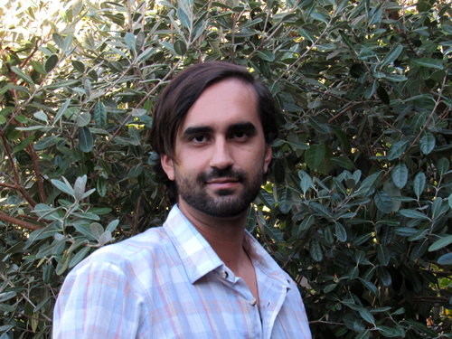

About Me

Born and Raised in San Diego CA, Andre watched the technology bloom from a very young age. Being introduced to computers and gadgets since a child, the understanding of such devices has come natural to him. Though relatively new to the trade, he spent the last two years studying within the Cuyamaca College school district immersed in Web and Graphic Design. He is now currently enrolled in a UCSD extension program, training to become a Full-Stack Developer.
On his free time he enjoys creating music, mountain biking, hikes , reading and spending time with friends and family.